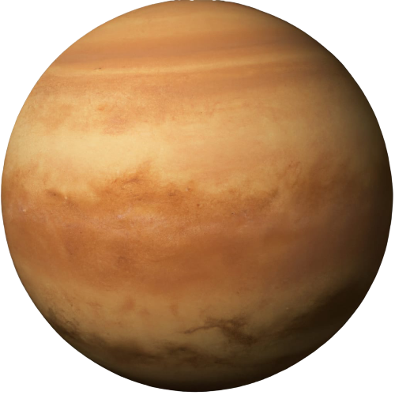

- 1. Vênus é o segundo planeta mais próximo do Sol em nosso sistema solar.
- 2. É frequentemente chamado de "Planeta irmão da Terra" devido às semelhanças em tamanho e composição.
- 3. Vênus possui uma atmosfera densa composta principalmente de dióxido de carbono, tornando-a um dos planetas mais quentes do sistema solar devido ao efeito estufa extremo.
- 4. A temperatura média da superfície de Vênus é de cerca de 467 graus Celsius, tornando-a mais quente do que Mercúrio, apesar de estar mais distante do Sol.
- 5. Vênus é conhecido por ter uma rotação retrógrada, o que significa que gira no sentido oposto à maioria dos outros planetas, incluindo a Terra.
- 6. Um dia em Vênus (uma rotação completa) dura mais do que um ano venusiano (uma órbita completa ao redor do Sol). Um dia em Vênus leva cerca de 243 dias terrestres, enquanto um ano venusiano leva cerca de 225 dias terrestres.
- 7. Vênus é frequentemente chamado de "Lucifer" quando visto como uma estrela brilhante na manhã ou na tarde, devido à sua aparência brilhante.
- 8. A superfície de Vênus é marcada por vulcões, montanhas e extensas planícies de lava.
- 9. As missões espaciais, como a sonda Venera da União Soviética e a sonda Magellan da NASA, ajudaram a estudar e mapear a superfície de Vênus.
- 10. Vênus é um dos objetos mais brilhantes no céu noturno após a Lua e o Sol e é frequentemente visível a olho nu.
|

|